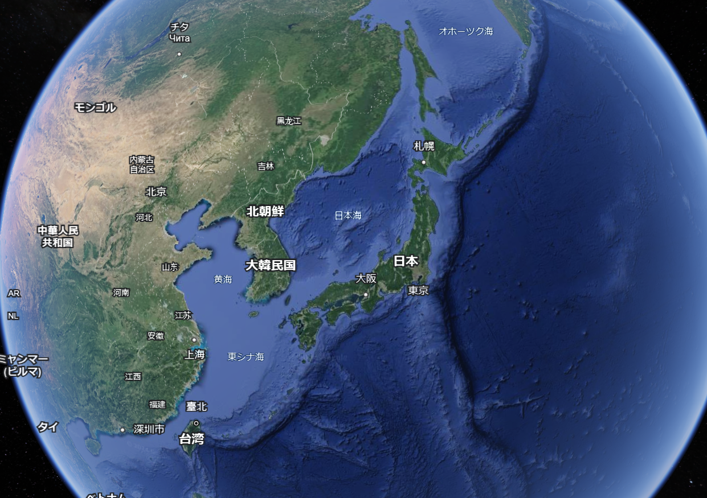
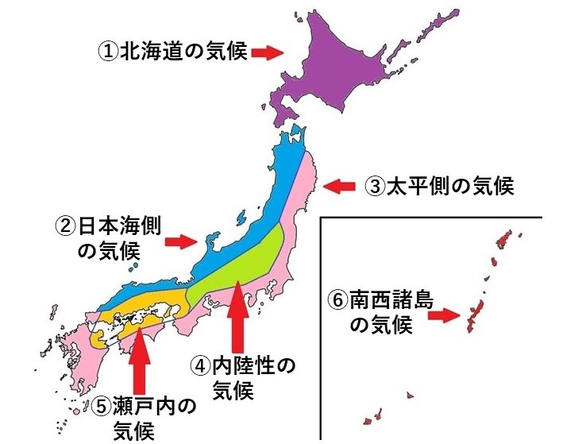
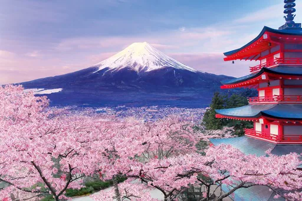
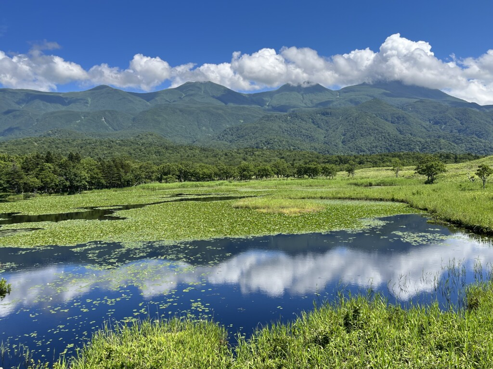
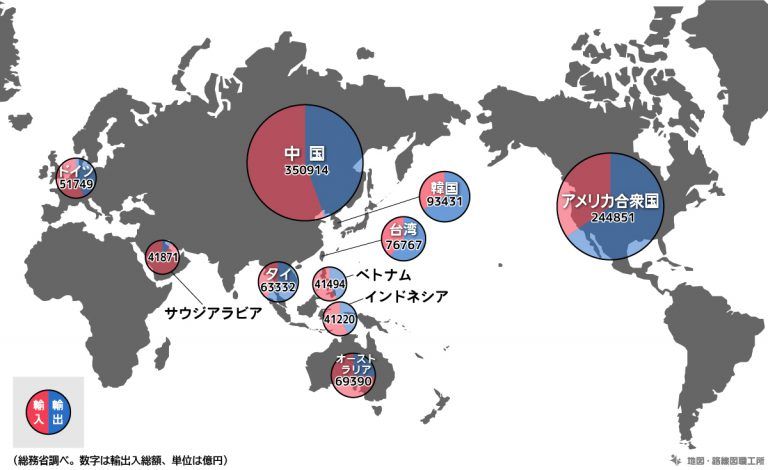
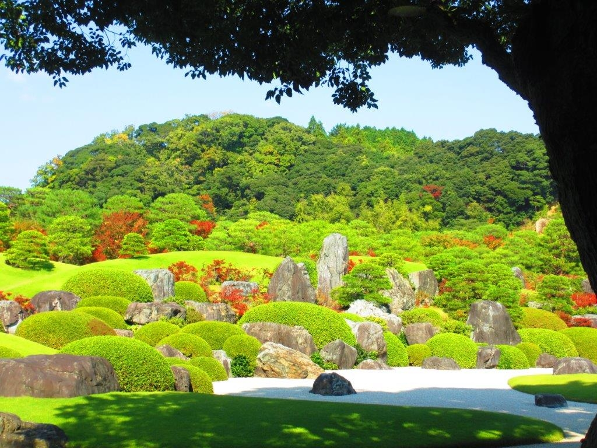
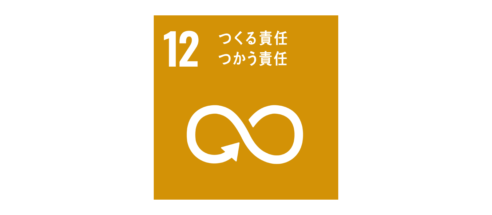
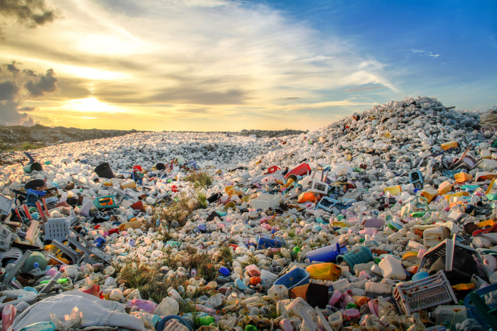

日本は東アジアに位置する島国であり、 東および南は太平洋、西は日本海と東シナ海、北はオホーツク海に面する。 北東から南西にかけて広がる島嶼群から構成され、総体ではおよそ1,4125島から成り立つ。
日本の国名は、中国からの呼称「倭」がはじまりで、古くからの名称である。 そして、天武天皇の時代に中国から見たら東にあるから日が昇る地という意味で「日本」と名付けられた。 日本を意味する「Japan」の語源はマルコポーロの旅行記に登場する「黄金の国・ジパング」が語源だとされている。
 目次へ戻る日本は南北に長く伸びているため、世界では珍しく６つの気候に分かれている。
それぞれの気候の特徴
西岸海洋性気候や温暖湿潤気候が見られる道南の一部沿岸地域を除くと、ほぼ全域が亜寒帯湿潤気候である。 夏と冬の温度差が大きく冬の積雪は根雪となる。 道内全域が豪雪地帯、一部地域は特別豪雪地帯になっている。
日本海の上を越えてくる北西の季節風により、冬に雪や雨が多い。
夏季、太平洋高気圧の吹き出しによる太平洋から吹く南風の影響を強く受け高温多湿となる。降雨も夏季に集中する。 冬季、日本海側から吹く湿った季節風は奥羽山脈や三国山脈、中央アルプスや中国山地で遮られ日本海側に大雪を降らせ太平洋側には乾燥した風が吹く。
気温の上昇・下降を緩衝する水辺が少ない地域に見られる気候で、比較的湿度が低く、日較差・年較差が大きい。 風が吹かない場合は放射冷却が起こりやすい。
瀬戸内地域の気候は温暖で雨が少なく、晴れが多い。 年間平均気温は約16度で、日照時間も長く暖かい。 さらに年間の平均降水量が約1000～1600mmと少ない上に、雨日数も少ない少雨傾向にある。 冬季は少雨・多照が特徴で、梅雨期には局地的な大雨が降ることもある。
南西諸島には亜熱帯性の気候が見られる。 年間を通じて気温が高く、梅雨期は5月中旬から6月下旬、最暖月が7月で、冬には北東の季節風が吹く。 緯度が低く暖流の黒潮が近海を流れているため、平均気温が高く、気温の年較差が小さい。 夏から秋にかけての降水量が多い。
目次へ戻る標高3776.12m、日本最高峰の独立峰で、日本国外でも日本の象徴として広く知られている。 数多くの芸術作品の題材とされ芸術面のみならず、気候や地層など地質学的にも社会に大きな影響を与えている。 2013年には関連する文化財群とともに「富士山-信仰の対象と芸術の源泉」の名で世界文化遺産に登録された。
2005年に世界自然遺産に登録。 知床五湖、カムイワッカ湯の滝、知床峠、プユニ岬など、知床八景と呼ばれる大自然の景観を有する。 そして、流氷群はロシア、アムール川の河口付近の氷が風に吹かれ、海流に乗って次第に成長しながら オホーツク海沿岸に1～3月頃に押し寄せる。クルージングや氷上ウォークなどを満喫できる。
 目次へ戻る中国は日本にとって最大の貿易相手国であり、日本企業による対中投資も極めて多く、日中間の貿易・投資などの経済関係は、非常に緊密である。
世界一の親日国は「タイ」「フィリピン」「ベトナム」の3国で同率1位ある。
 目次へ戻る日本の独自の特徴は日本文化である。日本文化は西洋文化とは全く異なり、 外国から影響を受けつつも日本人が築いた独自の文化である。 日本文化の起源は、縄文時代までさかのぼり、 当時の日本人の祖先は自然のなかで暮らし、自然には決して逆らわないように生きてきた。 その理由は、自然の力は人間よりも遥かに高く、仏教の教えでもある「空」の思想ともいわれており、 死に対しては動物のありのままの姿として日本文化を築いてきたからである。 一方で、西洋では人間の魂は永遠性の肉体を求める文化を築いてきた。 そのため、ミイラや巨大石造墓地などを作り、死を再生させるような思想がある。
 目次へ戻る日本では、プラスチックごみや食品ロスが問題となっている。 プラスチックごみの廃棄量は世界2位で、2021年には年間で824万トンも発生している。 食品ロスに関しては、2021年に523万トンもの食品が捨てられている。
  目次へ戻る